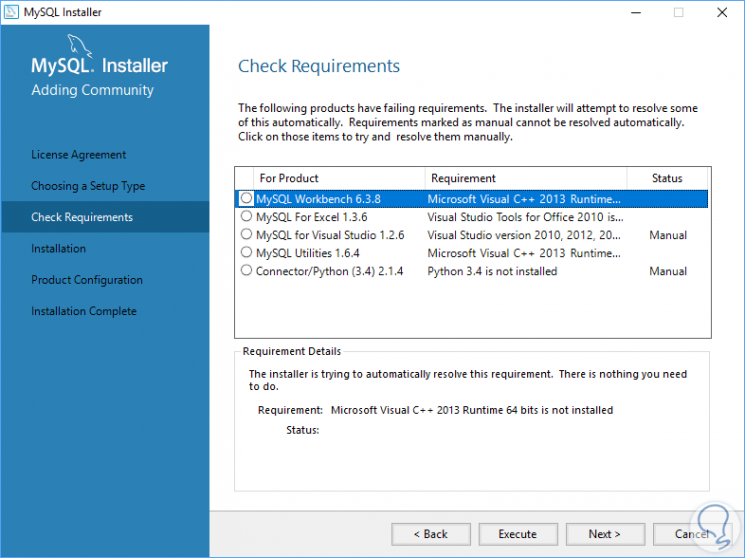
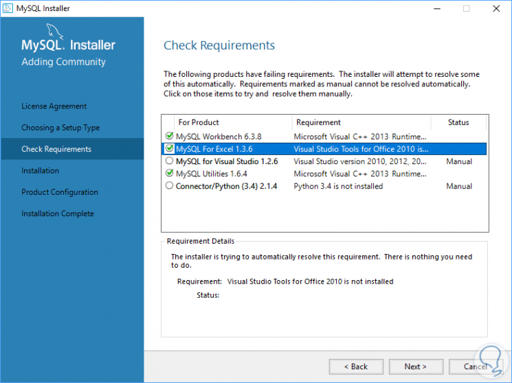
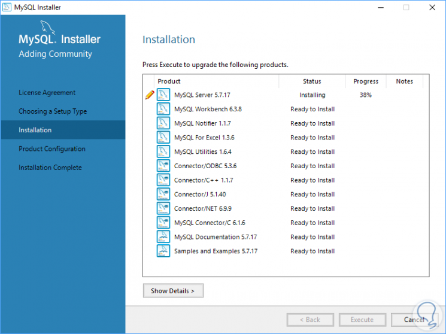
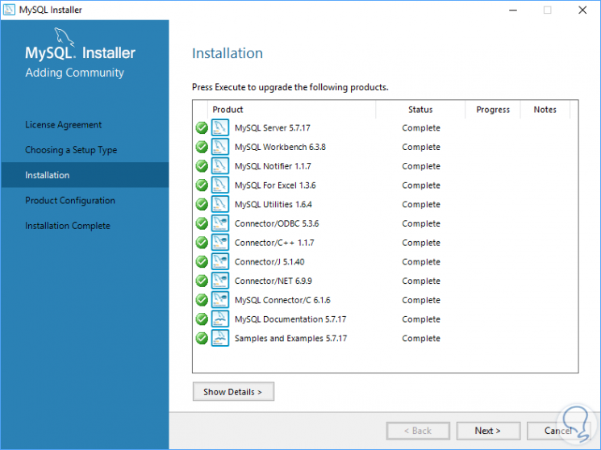
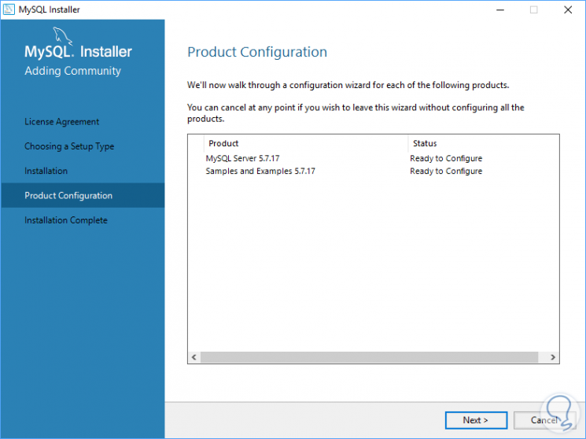
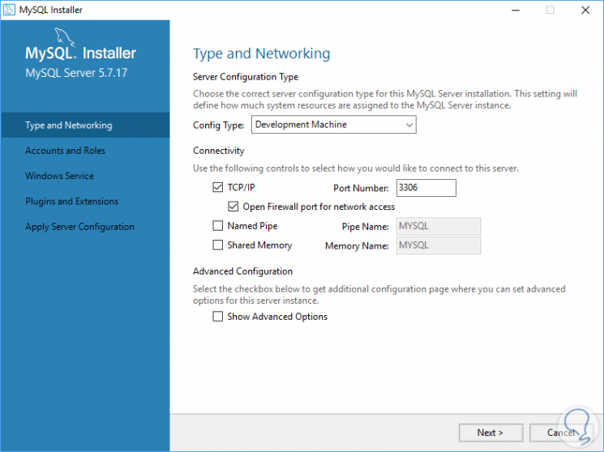
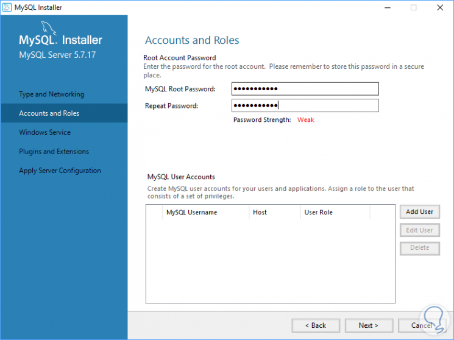
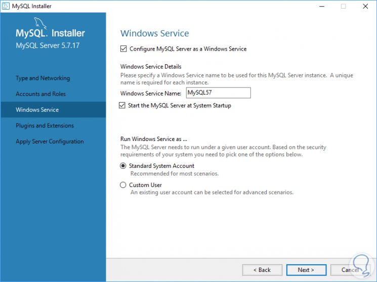
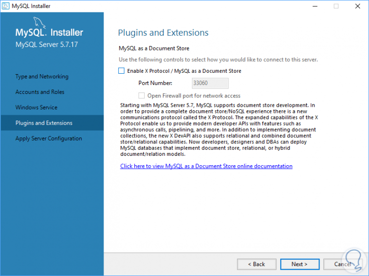
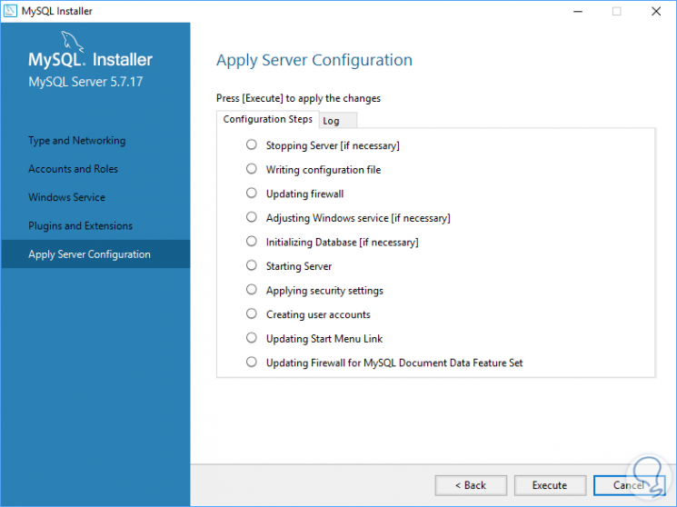

Una vez descargado ejecutaremos el archivo MSI para iniciar el proceso de instalación de MySQL en Windows Server 2016 y veremos la siguiente ventana.
Allí activaremos la casilla para aceptar los términos de licencia y pulsamos en Next y ahora podemos elegir el tipo de configuración de
MySQL a instalar:

En el costado derecho veremos las respectivas funcionalidades, en este ejemplo seleccionaremos Developer Default
Una vez seleccionado pulsamos en Next y serán comprobados todos los requisitos y en caso de fallar alguno podemos seleccionarlo y pulsar en el botón
Execute para su instalación:

Una vez finalizada esta actualización veremos que podemos seguir adelante con la instalación:

Pulsamos en Next y veremos lo siguiente. Allí debemos pulsar en el botón Execute para instalar o actualizar todos los requisitos:

Una vez finalizado el proceso de comprobación veremos lo siguiente:

Pulsamos en Next y veremos lo siguiente:

Allí pulsamos en Next y veremos lo siguiente:

Allí veremos los respectivos parámetros de configuración de MySQL. Pulsamos en Next y ahora debemos asignar la respectiva contraseña de MYSQL:

Al pulsar en Next veremos el nombre del servicio de MySQL y podemos configurar si MySQL se ejecuta al inicio.

Pulsamos de nuevo en Next y podremos configurar los parámetros de plugins y extensiones:

Al pulsar en Next y podremos ver un resumen de los ajustes a realizar:

Finalmente, pulsaremos en el botón Execute para aplicar los cambios y completar la instalación.
Para acceder a la base de datos del servidor debemos ingresar a la consola de Mysql y desde ella ingresar el comando:
$ mysql -hlugoserver.com -uroot -pfortnite
Donde lugoserver.com es el dominio, root el nombre de usuario y fortnite la contraseña.